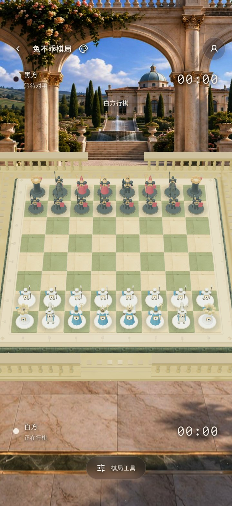

好看，要落在棋盘上。
这是一款正在打磨的独立 iPhone 国际象棋游戏。没有充值和广告，先把一盘棋做好。

实际 App 截图 · 非宣传渲染图
一张棋桌，多种心情
配套棋子、棋盘与场景，换一种氛围继续下。
你来决定下一步
三档人机难度，限时分析提供建议，选择权留给你。
每一局，都留得住
本机棋谱、逐步复盘、备份迁移和 PGN 导出。
离线，也能认真玩
人机与同设备双人无需账号。好友远程对战仍待正式分发及双机验收。
体验开放进度
目前尚无公开安装入口。当前开发版仅安装于开发者测试设备，未上线 App Store，也未开放 TestFlight。此页面和二维码为固定的产品信息入口，扫码不会直接进入游戏。
下一步计划使用 Apple TestFlight 开放 iPhone 测试。开放后将在此页增加官方安装链接；无需重新更换二维码。每个 TestFlight 构建有效90天，后续需要持续更新。安卓暂未提供。
微信版仍在办理备案，当前没有可承诺的正式开放日期。此页不提供失效的开发预览码。
咨询体验：1065483369@qq.com ↗本页不收集预约信息，不提供自动通知。最后更新：2026年11月23日。